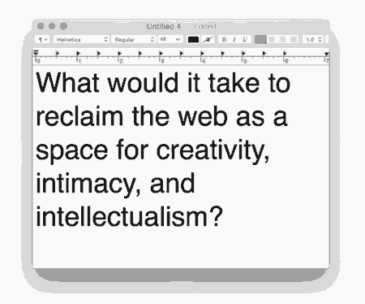

Overbrowsing compiles sustainable web design resources, tools, strategies, principles, and other related media. The term Overbrowsing carries a dual meaning that aligns with the core mission of the initiative.
This is a low-consumption site that uses just NaNg CO2e and runs on clean energy.
The website background changes color based on air quality. Today, the air quality is fair.
Overbrowsing is Powered by Are.na and employs techniques and principles to make it low-consumption. See our Github to find out more about the construction of this website.
The project was created by Headless Horse and printer_scanner.
Principals
The net does run on servers, and on power. And those things actually occupy space. Therefore, it kind of conforms to the politics of those spaces.
Charles Lim Yi Yong
November 22, 2023
Principals
Does reading an e-book, or watching a streaming video, use more energy than reading it on paper, or
buying a DVD - counting everything from mine-mouth and forest to consumer? Does playing a video
game use more energy than playing Monopoly? Does a doctor using an iPad for diagnostic advice from
artificial intelligence in the Cloud use more energy than, what? Traveling for a second opinion? The
answer involves more than knowing how much electricity one iPad, PC or smartphone uses. It requires
accounting for all the electricity used in the entire ICT ecosystem needed to make any of that possible.
November 22, 2023
Principals
Load only what is needed, when it's necessary.
November 22, 2023
Principals
Your website is temporary.
November 22, 2023
Principals
· Instagram is not real life.
November 22, 2023
Folklore
· capture-d-cran-2023-11-22-12.59.37.png
(G 175 FIELDS AND FEAR W R
MARTIAN INVASION
HAIKU BY JEAN YOUNERS AAT BY JUSTYNN TYME
DREHMING MY OWN DERTH MOTHRA IN THE SKY
Mals A CARPES OF SUNFLOMNERS
TRAPPED IN A TAPEWORMY uauing TO THE WIND
HAIKU BY ANGELO B. ANCHETA Y ME
DhamiBoo (UNITED STATES) Angelo B. Ancheta (PHILIPPINES)
November 22, 2023
Folklore
· capture-d-cran-2023-11-22-13.01.09.png
THE JAPANESE FANTASY FILM JOURNAL
November 22, 2023
Folklore
· capture-d-cran-2023-11-22-13.01.40.png
November 22, 2023
Folklore
· Damn I found some good stuffs online
November 22, 2023
Folklore
· capture-d-cran-2023-11-21-11.24.20.png
AN
N '
Y THI B
GALERIA ARSENAPRRS |
TELEKTROWNIAN Ta ) %/ |
VNEETRICAT ) 7
IS 00\ A/ |
SWETONSHEN 777/
BlALSTO M 2
4 BIN,
7 w 2608 UDZiAE BIoRA
G007 1200 GODZ 120 >
v ‘G007 150
- 1800
2207 sos0
60Dz 1200
0000000000
November 22, 2023
Folklore
· capture-d-cran-2023-11-14-13.39.48.png
in September 23
November 22, 2023
Folklore
· capture-d-cran-2023-11-22-10.51.11.png
m—:s ,
November 22, 2023
Folklore
· capture-d-cran-2023-11-22-10.48.49.png
November 22, 2023
Folklore
· capture-d-cran-2023-11-22-10.48.55.png
November 22, 2023
Principals
Always design a thing by considering it in its next larger context: a chair in a room, a room in a house, a house in an environment, an environment in a city plan.
November 22, 2023
Principals
· frb2aa6wuaef5oi?format=jpg-name=medium

November 22, 2023
Principals
I love the idea that we can use gardening as a metaphor to better learn about online spaces. Gardens have an organized chaos. Gardens are communal. You have to have many hands supporting the work of maintaining a garden. Gardens are messy. You're going to have things die, rot, and tangled roots. Gardens embrace that messiness. The platforms that we currently have move away from messiness. There's a level of curation that becomes a flaw in the ability of people to actually connect to one another and to connect with knowledge. Digital gardens create this metaphor and opportunity to reimagine online spaces.
November 21, 2023 · https://newpublic.substack.com/p/-tend-to-your-digital-gardens-flowers
Folklore
· tumblr_pswta9s7v01tawbs1o1_1280.jpg
November 21, 2023
Folklore
· waf-cover-acronym-1500x965.jpg
November 21, 2023
Folklore
· giphy-1-.gif
November 21, 2023
Folklore
· msx_magazine_1990-10_ascii_jp_0096.jpg
November 21, 2023
Folklore
· Japan AB
November 21, 2023
Folklore
· screenshot-2021-05-23-at-21.49.30.png
November 21, 2023
Folklore
· vintage_scifiart_305688789_1213308489244572_5251521964763416650_n.jpg
November 21, 2023
Folklore
· envol3ioi_338607544_567831341995010_6580025639259802517_n.webp
November 21, 2023
Folklore
· envol3ioi_327108607_212498204518992_8126777574794750270_n.webp
November 21, 2023
Folklore
· AKIRA Covers
November 21, 2023
Folklore
· 7f60bf672762671c47633546868f1029.jpg
November 21, 2023
Folklore
· d1719-309-160993-0.jpg
November 21, 2023
Folklore
· JAPAN MANGA MAGAZINES COVER
November 21, 2023
Folklore
· Pokemon Cards (singles)
November 21, 2023
Principals
· Editing the Past
November 20, 2023
Principals
"You know what makes a garden?
Weeding.
Gardens aren't just about the thriving of the desired plants. They're also about the non-thriving of the non-desired plants.
And weeding is hard work, and it's boring, and it's tedious, and it's unsexy."
November 20, 2023
Principals
· d35926ae-e4bf-404f-8d65-3344138f9b77.jpg
November 20, 2023
Principals
· The Threshold | Hermitage
November 20, 2023
Principals
· Digital Gardening for Non-Technical Folks
November 20, 2023
Principals
· You and your mind garden
November 20, 2023
Principals
· The Internet
The Internet can be more than just a resting place to publish your finished ideas - it can also be an incubator for ideas that aren't fully formed, a birthing center for developing work that you haven't started yet. (p. 82)
Kleon, A. (2012). Steal Like An Artist. Ten Things Nobody Told You About Being Creative. Workman Publishing Company: New York.
November 20, 2023
Principals
· mind-garden-hierarchy.png
November 20, 2023
Principals
· digital gardens
November 20, 2023
Principals
· uwuxrnazfdjheic2fopqp9earktrcvcl_k58gchujsy.png
November 20, 2023
Principals
I’ve come to think of software applications as a form of digital architecture: some are places of concentration, others of collaboration, others clearly just for fun. Software’s emotional dimension is crucial: how it feels dictates how it’s used. (Architects hire environmental psychologists; tech companies hire user-experience researchers.) Microsoft Word is the quiet room at the university library; personal Gmail is a dirty kitchen, yesterday’s plates stacked next to the sink; Twitter is an overcrowded bar. Throughout the day, I’ll move from room to room, alternating between solitude and socializing, work and play.
November 20, 2023 · http://www.newyorker.com/culture/culture-desk/workplace-by-facebook-or-a-party-in-the-office?mbid=nl_161011_Daily&CNDID=40658091&spMailingID=9670305&spUserID=MTMzMTg0Nzk3MTgwS0&spJobID=1020852209&spReportId=MTAyMDg1MjIwOQS2
Design Tools
· Free fonts
November 8, 2023
Design Tools
· folk computing
October 30, 2023
Design Tools
· Digital Gardening
October 10, 2023
Design Tools
· Coded Graphics — Sam Seurynck Design
October 9, 2023
Design Tools
· TypeTrials𛲅 Powered by Pangram Pangram Foundry
June 1, 2023
Design Tools
· Keys To Longevity
Don’t pressure yourself into making noise on the internet because you’re afraid of being forgotten.
Take your time & make something that will last longer than you will even if that means infrequent output Trends will get you there now, a unique and original feeling will last forever.
May 10, 2023 · https://www.commondiscourse.xyz/p/071-i-think-ive-been-here-before
Design Tools
· Document
March 23, 2023
Design Tools
· GitHub - cacheflowe/creative-coding-notes: Some text and links about the wide world of creative coding
March 15, 2023
Design Tools
· image.png
March 5, 2023
Design Tools
· Research / Saving energy on the Web + Accounting for internet speed
Tom Jarrett
Designing Branch: Sustainable Interaction Design Principles - Branch
Solar Protocol
limits22-final-brain.pdf
LIMITS 2022 -- Workshop on Computing within Limits
Home - Sustainable Web Design
March 5, 2023
Design Tools
superposition as combining visual representation of visual waves and the waves of sound
February 13, 2023
Design Tools
Website as plant
Plants can’t be rushed. They grow on their own. Your website can be the same way, as long as you pick the right soil, water it (but not too much), and provide adequate sunlight. Plant an idea seed one day and let it gradually grow.
Maybe it will flower after a couple of years. Maybe the next year it’ll bear fruit, if you’re lucky. Fruit could be friends or admiration or money—success comes in many forms. But don’t get too excited or set goals: that’s not the idea here. Like I said, plants can’t be rushed.
February 13, 2023 · https://thecreativeindependent.com/people/laurel-schwulst-my-website-is-a-shifting-house-next-to-a-river-of-knowledge-what-could-yours-be/